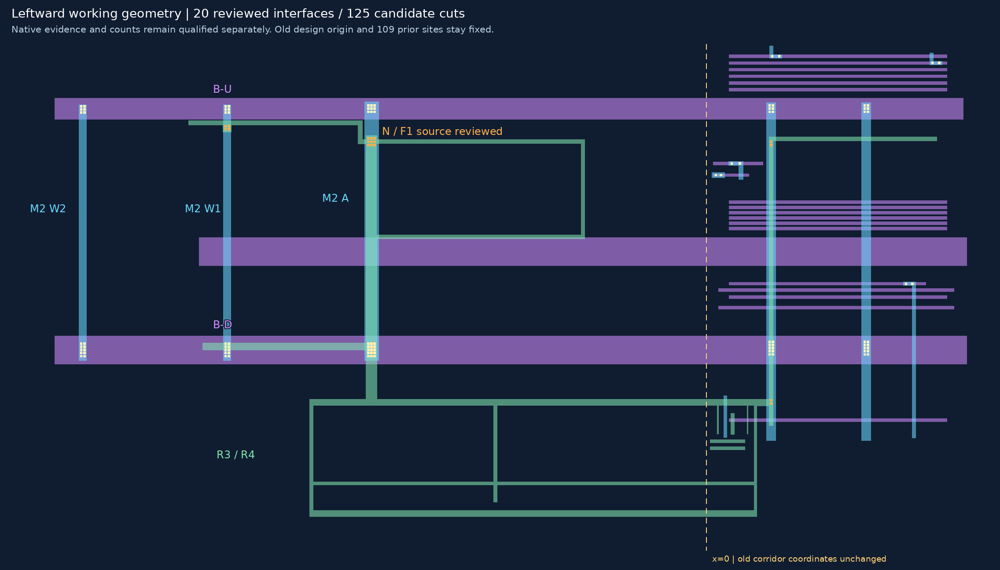
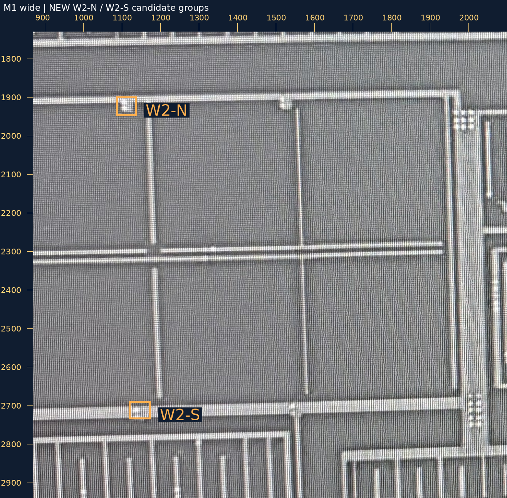
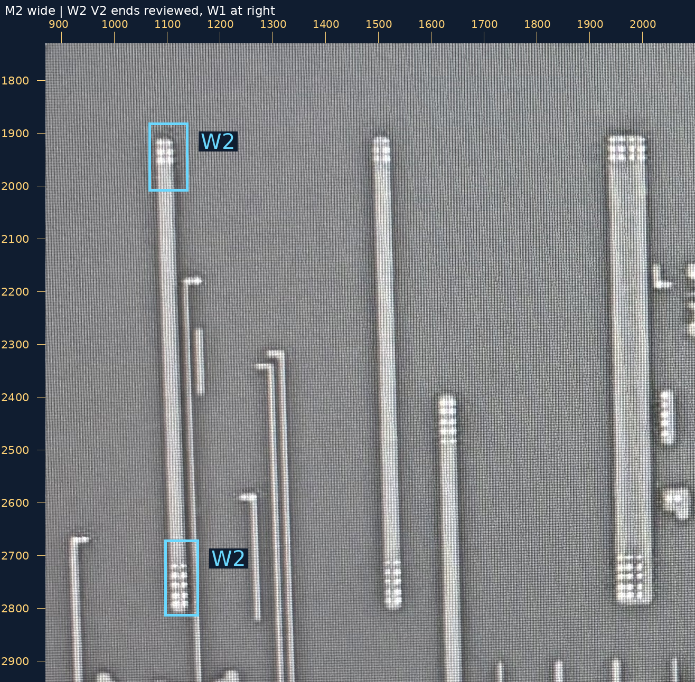
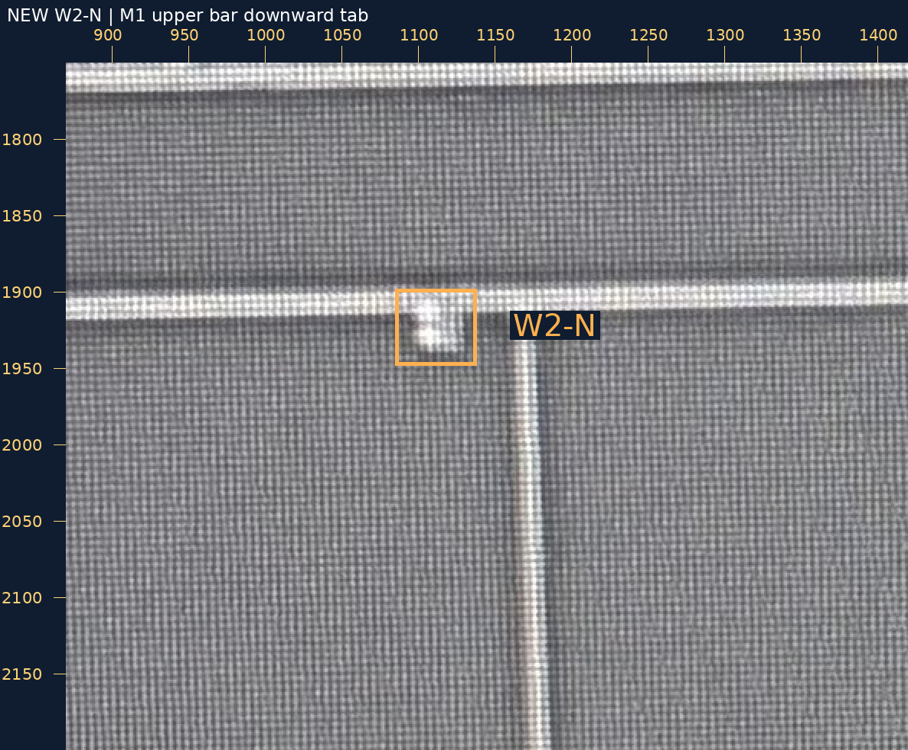
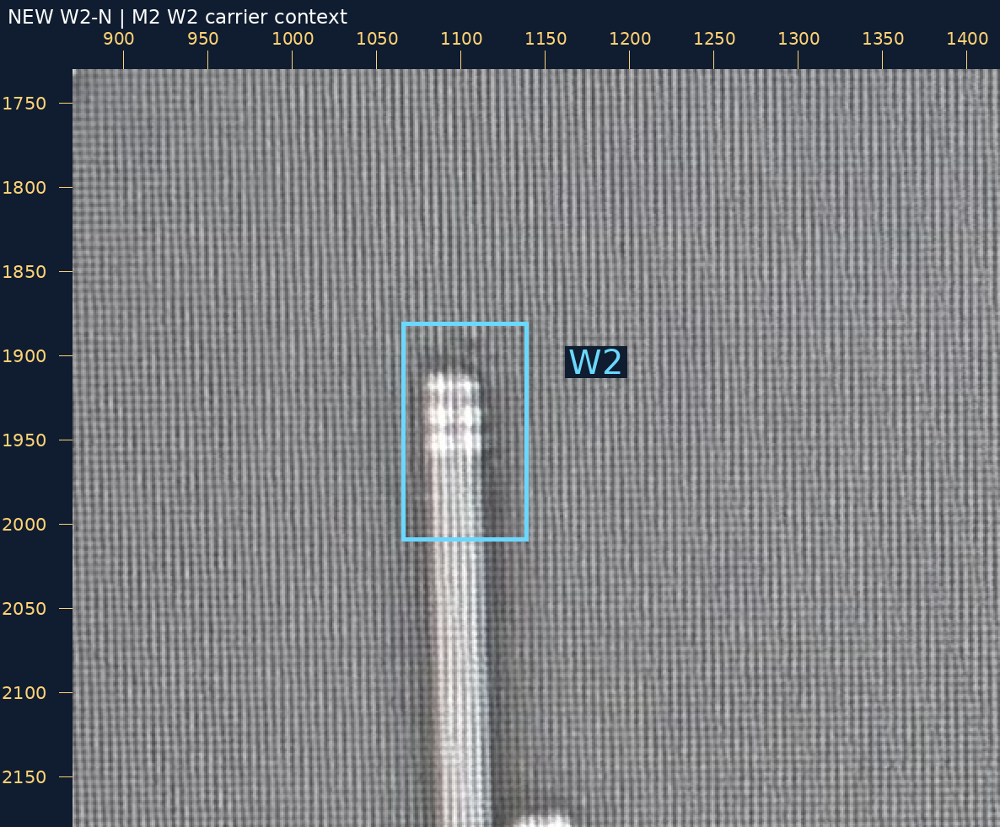
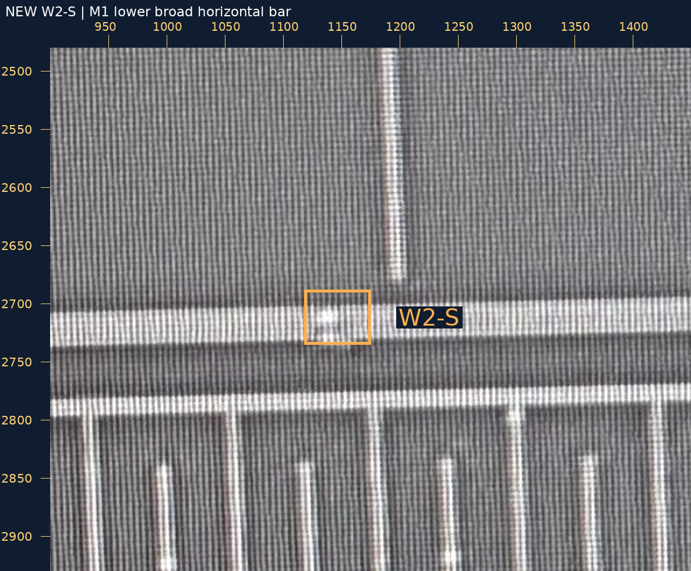
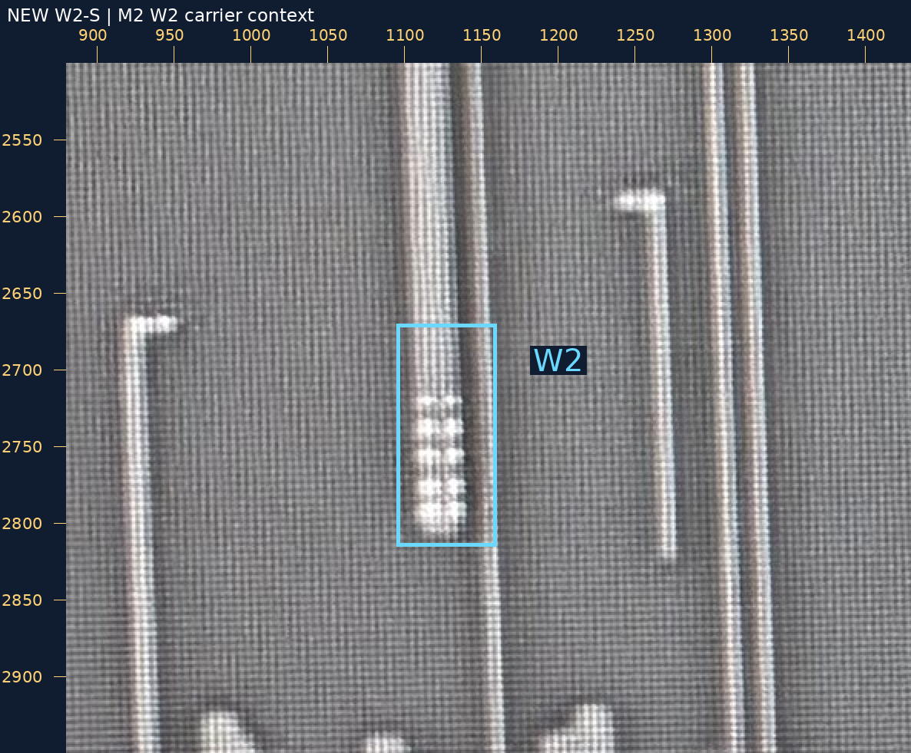

2026-10-30 · 旧孔中心保持 · 新物理连接集中裁决
原话“W2-U：是 V2，接 B-U”“W2-D：是 V2，接 B-D”已保存，绑定原请求和原生照片。先只向左扩450设计像素视口，再为两条M3母线追加来源延续块，新增W2，最后加入两个完整候选阵列。未平移、缩放或微调旧孔。
当前37金属候选、20已审局部接口、125设计候选孔；旧18人审、109孔边界与中心保持。两条M3仅新增左方局部块，原块、骨架、宽度、原生锚点保持。上端3×2、下端5×2是AI候选，不是物理孔数批准。20组候选的整组包围/间距通过；未知真实工艺与尺度，不声称PDK DRC通过。
W2上的V1尚未加入工作层。M1来源的上、下横条与已建C-M1-SPINE有同帧连续证据；但它们是否经本处V1接W2仍需本轮新裁决。邻近细竖M1不按距离合并，M2上的V2也不反充V1证据。

左右分别是M1、M2原生照片，无直接投影。橙框为M1孔组搜索区，蓝框为W2承载搜索区；搜索框不是精密金属边界。
| 新位置 | 判断 | 两层大邻域 |
|---|---|---|
| W2-N | M1上横条的下突台阶是否包含V1，并接到W2？ | 上部M1/M2大图 |
| W2-S | M1下方宽横条上的孔组是否为V1，并接到W2？ | 下部M1/M2大图 |
可回复“W2-N、W2-S均为V1并接W2”，或逐项修正。只确认这两处新身份与承载，不要求孔数；不重问W2的V2、W1/F1/N/Q1等旧裁决。尚未确定W2所有可见接口已穷尽。
范围[870, 1730, 2100, 2940]，整数放大1倍。
无标记原图 · 标记大图
范围[870, 1730, 2100, 2940]，整数放大1倍。
无标记原图 · 标记大图
范围[870, 1750, 1420, 2200]，整数放大2倍。
无标记原图 · 标记大图
范围[870, 1730, 1420, 2180]，整数放大2倍。
无标记原图 · 标记大图
范围[900, 2480, 1450, 2930]，整数放大2倍。
无标记原图 · 标记大图
范围[880, 2500, 1430, 2950]，整数放大2倍。
无标记原图 · 标记大图
W2两端人审 · 当前恢复请求 · M1来源观察 · 新V1裁决请求 · 验证
source_to_design_transform=null，geometry_adopted=false，net_edges=[]，complete_network=false。README/site/gh-pages保持；浏览器交互未实测。